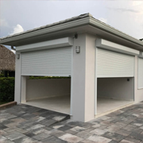
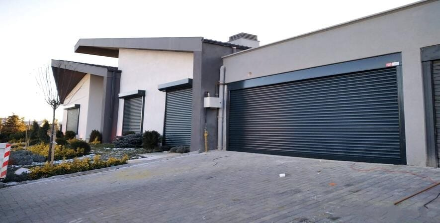
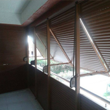
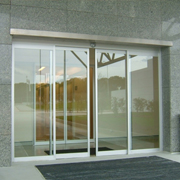
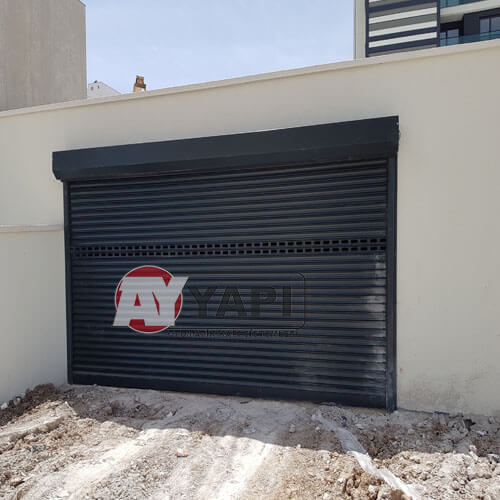
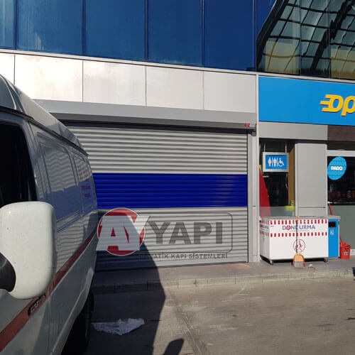
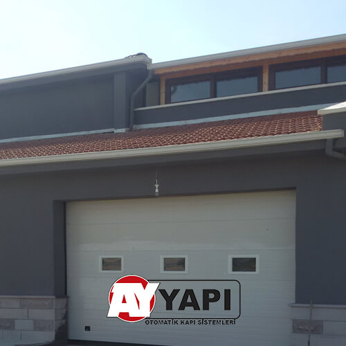

01YÜKSEK GÜVENLİK
Otomatik Çelik Kepenk
Mağaza, depo ve iş yerleri için dayanıklı motorlu koruma.
MotorluUPS uyumlu
Ürünü incele 
İhtiyacınıza uygun sistemi keşfedin, yaklaşık maliyeti hesaplayın ve uzman ekibimizden teklif alın.
Güvenlik, görünürlük, hız ve kullanım yoğunluğuna göre doğru sistemi birlikte belirleyin.
Ürün danışmanını başlat
01Mağaza, depo ve iş yerleri için dayanıklı motorlu koruma.

02Konut ve ticari alanlarda gölgeleme, mahremiyet ve otomasyon.

03Yoğun girişler için hızlı, erişilebilir ve kontrollü otomasyon.
Konut ve ticari garajlar için otomatik çözümler.
Motor, kumanda, alıcı kartı ve UPS seçenekleri.
Ay Yapı'nın mevcut sitesindeki gerçek faaliyet görselleri.
Birkaç kısa seçim yapın. Satış baskısı olmadan ihtiyacınıza uygun sistemleri ve nedenlerini görün.
Seçimlerinize göre örnek parametrelerle anlık bir ön maliyet görün. Bu demo fiyatları ticari teklif değildir.
Önemli bilgi Kesin fiyat; yerinde ölçü, montaj koşulları, ürün özellikleri ve keşif sonucuna göre belirlenir.
Ay Yapı deneyimini tek bir telefon görüşmesine sıkıştırmıyoruz. Keşiften bakıma kadar her adımı anlaşılır hale getiren bir sistem kuruyoruz.
Kullanım alanı, güvenlik seviyesi ve kullanım yoğunluğuna göre doğru çözüm.
Uygulama alanına ve montaj koşullarına göre teknik değerlendirme.
Sistem bileşenlerinin sahaya uygun biçimde kurulması ve teslimi.
Bakım ve arıza taleplerinin kayıt altına alındığı takip edilebilir süreç.
Aşağıdaki görseller Ay Yapı'nın mevcut internet sitesindeki proje arşivinden alınmıştır. Proje detayları yalnız doğrulanabilen bilgilerle sınırlandırılmıştır.
Kaynak siteyi görüntüle
KEPENKOtomatik kepenk · Gerçek uygulama fotoğrafı

İŞ YERİTicari alan · Otomatik kepenk uygulaması

GARAJKonut uygulaması · Seksiyonel kapı sistemi
Belirtileri seçin; olası nedenleri ve güvenle kontrol edebileceğiniz noktaları görün.
Elektrik beslemesi, sigorta veya kontrol kartı kaynaklı bir kesinti ihtimali bulunur.
Arıza bilgilerini iletin. Demo talep numaranız oluşturulsun ve servis akışını görün.
Satın alma, bakım ve arıza süreçlerini açık, teknik ve anlaşılır içeriklerle öğrenin.
Tüm rehberlerGenişlik, yükseklik ve montaj payını güvenli bir ön keşif için nasıl not edeceğinizi öğrenin.
Rehberi inceleGerçek müşteri değerlendirmeleri, proje fotoğrafları ve belgeler yalnızca kaynak doğrulaması ve paylaşım izni sonrasında görünür.
Yerel sayfalar yalnızca gerçek hizmet kapsamı, özgün bölge bilgisi ve doğrulanmış proje verisi olduğunda yayınlanır.
Bölgeniz için bilgi alınYanıtını bulamadığınız konularda satış veya servis ekibine ulaşabilirsiniz.
Ölçü, profil/lamel türü, motor kapasitesi, kumanda, UPS, montaj koşulları ve uygulama konumu birlikte değerlendirilir. Online hesaplama yalnızca ön maliyet aralığı verir.
Sistemin motor ve aksesuar yapısına bağlıdır. UPS veya uygun manuel açma mekanizması bulunan sistemlerde kontrollü kullanım mümkün olabilir. Güvenli yöntem için ürün belgesine veya servise başvurun.
Yaklaşık genişlik ve yükseklikle ön fiyat alabilirsiniz. Kesin teklif için montaj alanının ve net ölçülerin değerlendirilmesi gerekir.
Canlı sistemin ikinci fazında size verilen AY- ile başlayan talep numarası üzerinden servis durumunuzu takip edebileceksiniz.
Ön fiyat alın veya ölçü ve kullanım alanınıza özel teklif isteyin.